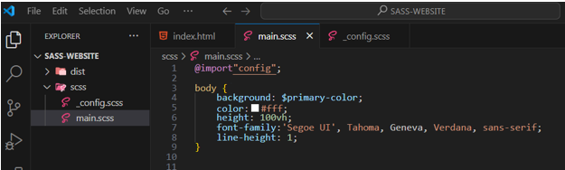
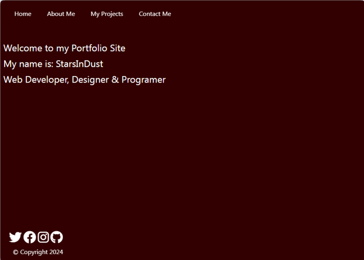

~2 The SASS Folder~
7/15/2024
Writing the _config partial file
Setting the Social Icons to Sit Above the Footer

Make sure you are in the root, that means outside of that dist folder. This folder is for your SCSS and it needs to be created outside of that dist folder.
Inside of that scss file, create a file called main.scss
Inside of that same scss folder, we will create a partial _config
In a large workflow, we would actually create a partial for all of our elements. This is not a large project, but we will still be looking at that work method in this tutorial, so we can be more familiar with it, when we do need to step into larger projects.
Writing the _config partial file.
$primary-color:#320001;
$secondary-color:#e8854c;
* {
box-sizing: border-box;
margin: 0;
padding: 0;
}
The Main.scss file
Open up the main.scss file that we had just set up. We need to import that config file that we just created, so our main file will have access to it.
@import"config";
The body code
body {
background: $primary-color;
color:#fff;
height: 100vh;
font-family:'Segoe UI', Tahoma, Geneva, Verdana, sans-serif;
line-height: 1;
}

What is vh and rem?
Using vh here for the height will give us 100% of the available viewport, which is what we want.
Using rem, just means that the font-size is based on whatever the body font-size was set to. If you set your body font size to 12, setting rem to 1 will be 12, setting rem size to 2 would be 24, or twice the size and so on… The default font size is actually 16, so if you do not set the font then rem would be based on 16, and twice that would be 32…
On the other hand, pixels are an absolute unit, when you set your pixels to something like 24px, that is what it will be, it will not be flexible based on the font size that you happen to want to use. So, you can say that because of this rem is more responsive, or customizable.
h1-H3 and Header Code
h1, h2, h3 {
font-weight: 400;
padding: 8px;
}
a{
color:#fff;
text-decoration: none;
}
header {
position: fixed;
z-index: 2;
width: 100%;
padding: 1rem;
}
The Navigation Code
Inside of the main.scss file
The Main Code
This code is also inside of the main.scss file
main {
height: 100%;
width: 100%;
padding-top: 100px;
.social-icons {
position: fixed;
bottom: 3rem;
left: 1rem;
a {
padding: 0.4rem;
&:hover {
color: $secondary-color;
}
}
}
}
Notice that we have nested some of the code in the .main class rule. The Social icons and the hover were nested inside of the rule.
Setting the Social Icons to Sit Above the Footer
We have set the position of the .social-icons to be fixed, and at the bottom of the page. We will also set the footer to be fixed and at the bottom of the page. But we want the social icons to sit on top of the footer. So, what we do is set the bottom of the social media icons to be 3rem. If you want the icons to rest even higher than this, you would set the bottom to be 4rem. But it is here where you can maneuver where the icons will sit in relation to both the bottom of the page, as well as, to the footer text.
Warning, we have not exactly set up the footer tag yet so you will not see that copyright message until we do. I was only demonstrating how we want the icons to rest 3 rem above the bottom.
The Footer Code
font-size: 1rem;
position: fixed;
bottom: 0.2rem;
left: 1rem;
text-align: left;
padding: 1rem;
color:#fff;
}
Notice how we set the footer to rest 0.2 above the bottom. This is not only setting the positioning to have space above the botton of the page, but it is less then the 3 rems that we set for the social media icons, so this will sit below them. Again, since the footer is at a fixed position at the bottom, we need to set where we want it to sit above the bottom.
Testing
BEFORE TESTING
Turn on SASS
Now if everything worked correctly you can open up your dist folder and you will see your new CSS folder with two new files that were automatically created.This folder now contains both a main.css and a main.css.map file. And all of that SASS code,that we just wrote, was converted into regular CSS, which browsers understand.
You can test your page by using Live server, but without any real css styles incorporated, it still does not look great.
GO TO INDEX.HTML to view page
This is what the hover looks like
This is what the entire page looks like right now
